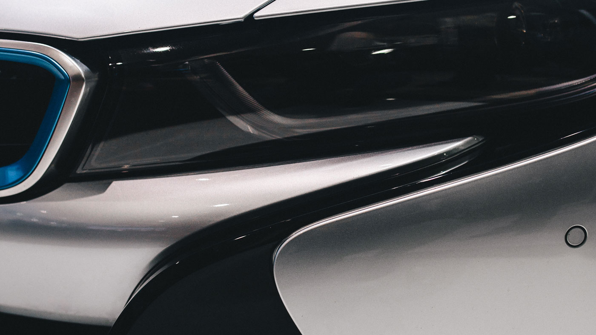

Freude am Fahren
駆けぬける歓び
Continue駆けぬける歓び
ContinueBayerische Motoren WerkeAG
BMW（ビーエムダブリュー、ドイツ語: Bayerische Motoren WerkeAG、バイエルン発動機製造株式会社）は、ドイツのバイエルン州ミュンヘンを拠点とする自動車および自動二輪車、エンジンメーカーである。
Read MoreOrigin of the emblem
1917年10月5日にBMWのロゴマークが商標登録された。1929年の広報広告により、現在の黒く縁取った円の中央を十字によって4等分し、 点対称に青と白に塗り分けたデザインである。
Read More
Product features
フル4シーターの4ドアセダン車をメインに据えつつもスポーティーな作りを心掛けているのが特徴である。駆動方式についてもフロントエンジン・リアドライブ方式（FR）の後輪駆動（もしくはFRベースの4WD）にこだわり、最近までBMWブランドでの前輪駆動（FF）車はなかったが、2シリーズアクティブツアラーがBMW初のFF車としてラインナップに加わった。
Read More
Motorcycle
BMWは第一次世界大戦後にオートバイ用エンジンの生産を始め、続いてオートバイ自体の生産を始めた。同社のオートバイブランドは現在日本では「BMWモトラッド（ドイツ語読みではモトアラート、モトラート）」として知られる。
Read More
Motor sports
モータースポーツには古くから比較的積極的な姿勢を見せている。 特に活動が目立つのがツーリングカーレースで、シュニッツァー・モータースポーツやハーマンモータースポーツなどのセミワークスチームを多数抱え、世界ツーリングカー選手権（WTCC）やニュルブルクリンク24時間レースなどのレースに積極的に参戦している。
Read More
Business conditions
2011年通期の世界市場での販売実績はBMWグループ全体として166万8982台、内訳はBMW138万384台、MINI28万5060台、ロールスロイス3538台、売上高は688億2100万ユーロ（2003年通期の世界市場での販売実績はBMWグループ全体として110万4916台、売上高は415億2500万ユーロ）。
Read More